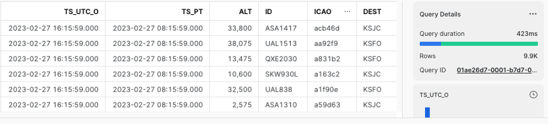
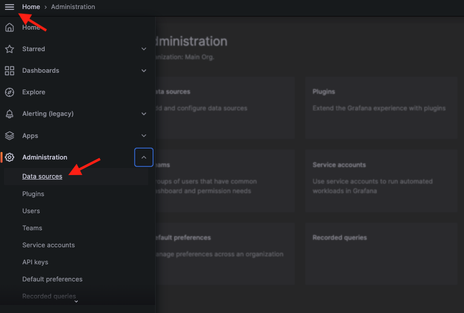
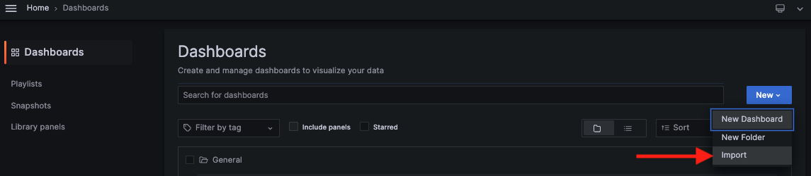
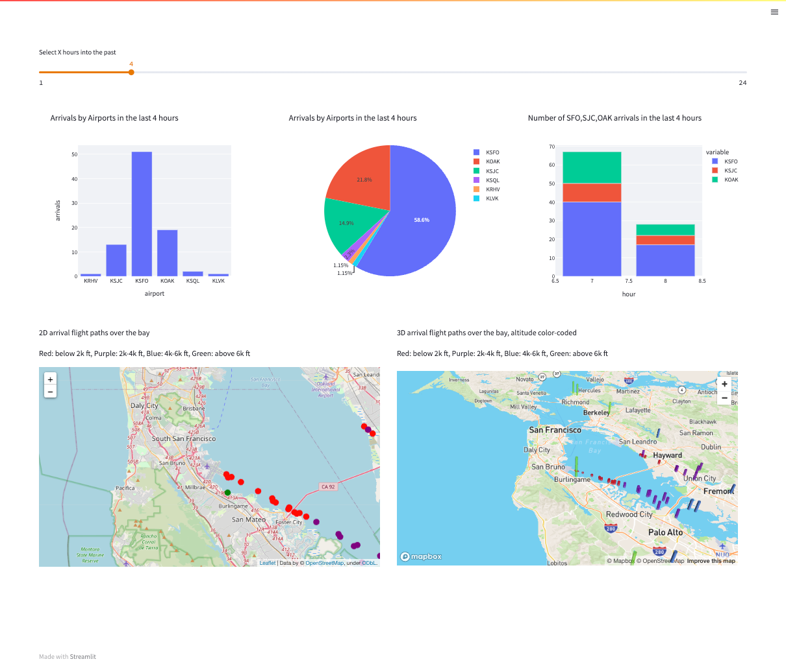

Monitoring your real-time assets in Snowflake is crucial as it allows you to spot anomalies fast and handle the incoming issues proactively to minimize the blast radius.
Here are some of the use cases that can benefit from tracking your live data streams:
- Real-time traffic control
- Fraud detection in banking industry
- Oil pipeline safety monitoring
- Smart factory management
In this workshop, we will visualize real-time commercial flight data over the San Francisco Bay Area from the Opensky Network with Amazon Managed Service for Grafana and Streamlit. The architecture diagram below illustrates the deployment, with the non-greyed out area being the focus of our workshop. The grey out area is covered in the Snowpipe Streaming quickstarts.
The data in Snowflake table is visualized in real-time with AMG (Amazon Managed Service for Grafana) and Streamlit Note that Streamlit is containerized and managed by Amazon Elastic Container Service (ALB). An Application Load Balancer is used to front-end the container.


Prerequisites
- Familiarity with Snowflake, basic SQL knowledge, Snowsight UI and Snowflake objects
- Familiarity with Grafana, Docker, Streamlit, AWS Services (e.g. ECS, VPC, etc) and the AWS Management Console
- Basic knowledge of Python programming
- Please
DO NOTuse Snowflake account in production for this workshop. Always use trial or test account for the demo purposes.
What You'll Need Before the Lab
To participate in the virtual hands-on lab, attendees need the following resources.
- A Snowflake Enterprise Account on preferred AWS region with
ACCOUNTADMINaccess - Optional - Finished the quickstarts for Snowpipe Streaming and Amazon MSK and has ingested and kept live data in Snowflake.
- An AWS Account with
Administrator Access - Create your own VPC and subnets (This is optional if you have an existing VPC with subnets you can leverage. Please refer to this AWS document for the MSK networking topology)
- In the AWS account, create a VPC, preferably in the same region as the Snowflake account
- In the VPC, create subnets and attach an internet gateway to allow egress traffic to the internet by using a routing table and security group for outbound traffic. Note that the subnets can be public or private. Normally public subnets are sufficient for this lab.
- If you have decided to create your own VPC/subnets, for your convenience, click here to deploy a VPC with a pair of public and private subnets, internet gateway and NAT gateway for you. Note that you must have network administrator permissions to deploy these resources.
What You'll Learn
- Using AMG (Amazon Managed Servie for Grafana) to monitor real-time data
- Using Streamlit to build a dashboard to track real-time data
- Using Amazon Elastic Container Service (ALB) to host a Streamlit container
- Using Application Load Balancer as the web proxy for the container.
What You'll Build
- Create an ECS cluster and Application load balancer to frontend the Streamlit container
- Deploy an AMG workspace
- Import/build a Grafana dashboard to track live flight data
- Containerize a Streamlit app in ECS
If you have completed the quickstarts for Snowpipe Streaming and Amazon MSK and haven't cleaned up the database, there is no further actions required, just skip ahead to the section for Monitor with Amazon Managed Service for Grafana (AMG) on the left pane.
At this point, you can either choose to complete Option 1 above first then skip ahead to the section for Monitor with Amazon Managed Service for Grafana (AMG) on the left pane, or you can start by processing some sample data described in steps below before using AMG or Streamlit.
1. Create user, role, database, schema, and warehouse in Snowflake
First login to your Snowflake account as a power user with ACCOUNTADMIN role. Then run the following SQL commands in a worksheet to create a user, database and the role that we will use in the lab.
-- Set default value for multiple variables
-- For purpose of this workshop, it is recommended to use these defaults during the exercise to avoid errors
-- You should change them after the workshop
SET PWD = 'Test1234567';
SET USER = 'STREAMING_USER';
SET DB = 'MSK_STREAMING_DB';
SET SCHEMA = 'MSK_STREAMING_SCHEMA';
SET WH = 'MSK_STREAMING_WH';
SET ROLE = 'MSK_STREAMING_RL';
USE ROLE ACCOUNTADMIN;
-- CREATE USERS
CREATE USER IF NOT EXISTS IDENTIFIER($USER) PASSWORD=$PWD COMMENT='STREAMING USER';
-- CREATE ROLES
CREATE OR REPLACE ROLE IDENTIFIER($ROLE);
-- CREATE DATABASE AND WAREHOUSE
CREATE DATABASE IF NOT EXISTS IDENTIFIER($DB);
USE IDENTIFIER($DB);
CREATE OR REPLACE WAREHOUSE IDENTIFIER($WH) WITH WAREHOUSE_SIZE = 'SMALL';
-- GRANTS
GRANT CREATE WAREHOUSE ON ACCOUNT TO ROLE IDENTIFIER($ROLE);
GRANT ROLE IDENTIFIER($ROLE) TO USER IDENTIFIER($USER);
GRANT OWNERSHIP ON DATABASE IDENTIFIER($DB) TO ROLE IDENTIFIER($ROLE);
GRANT USAGE ON WAREHOUSE IDENTIFIER($WH) TO ROLE IDENTIFIER($ROLE);
GRANT ROLE IDENTIFIER($ROLE) TO ROLE ACCOUNTADMIN;
-- SET DEFAULTS
ALTER USER IDENTIFIER($USER) SET DEFAULT_ROLE=$ROLE;
ALTER USER IDENTIFIER($USER) SET DEFAULT_WAREHOUSE=$WH;
-- SET TIME ZONE TO UTC
ALTER ACCOUNT SET TIMEZONE = 'UTC';
-- CREATE SCHEMA
USE DATABASE IDENTIFIER($DB);
USE ROLE IDENTIFIER($ROLE);
CREATE OR REPLACE SCHEMA IDENTIFIER($SCHEMA);
2. Copy Sample Data into Snowflake
Run the following command to load sample flight data into Snowflake.
USE DATABASE MSK_STREAMING_DB;
USE SCHEMA MSK_STREAMING_SCHEMA;
USE WAREHOUSE MSK_STREAMING_WH;
CREATE OR REPLACE STAGE FLIGHTS
URL='s3://jsnow-vhol-assets/amg/sample-flight-data/'
FILE_FORMAT = (TYPE = 'parquet');
CREATE OR REPLACE TABLE FLIGHTS_TBL
(RECORDID NUMBER AUTOINCREMENT,
V VARIANT)
CHANGE_TRACKING = TRUE;
COPY INTO FLIGHTS_TBL (V) FROM
(SELECT $1 FROM @FLIGHTS/)
FILE_FORMAT=(TYPE = 'parquet');
SELECT * FROM FLIGHTS_TBL LIMIT 10;
Now you should see raw data in variant type is copied into the FLIGHTS_TBL table.
Next, we will create a view and run DDL to convert the raw data into a multi-column table.
CREATE OR REPLACE VIEW FLIGHTS_O_VW
AS
SELECT
V:utc::TIMESTAMP_NTZ ts_utc_o,
CONVERT_TIMEZONE('UTC','America/Los_Angeles',TS_UTC_O::TIMESTAMP_NTZ) AS ts_pt,
V:alt::INTEGER alt,
V:id::TEXT id,
V:icao::TEXT icao,
V:dest::TEXT dest,
V:orig::TEXT orig,
V:lat::FLOAT lat,
V:lon::FLOAT lon,
ST_GEOHASH(TO_GEOGRAPHY(ST_MAKEPOINT(LON, LAT)),12) GEOHASH,
YEAR(TS_UTC_O)::INTEGER yr,
MONTH(TS_UTC_O)::INTEGER mo,
DAY(TS_UTC_O)::INTEGER dd,
HOUR(TS_UTC_O)::INTEGER hr
FROM FLIGHTS_TBL;
SELECT * FROM FLIGHTS_O_VW LIMIT 10;
You should see the view FLIGHTS_O_VW with multiple columns for timestamps, altitude, longitude, latitude, destination airport, etc.

3. Adjust the timestamps to current
Because the sample data is from a time in the past, we now need to adjust the old timestamps to current to simulate the real-time pattern. Run the following commands to adjust the timestamps.
-- ADJUST TIME STAMPS
CREATE OR REPLACE VIEW FLIGHTS_VW AS
SELECT *, DATEADD(SECOND, (SELECT DATE_PART(EPOCH_SECOND, CURRENT_TIMESTAMP())
- DATE_PART(EPOCH_SECOND, MAX(TS_UTC_O)) FROM FLIGHTS_O_VW), TS_UTC_O) AS TS_UTC FROM FLIGHTS_O_VW;
SELECT TS_UTC_O, TS_UTC FROM FLIGHTS_VW ORDER BY TS_PT DESC;
Now you should see the timestamps(TS_UTC_O) are adjusted to the current time(TS_UTC).
4. Create a task to adjust the timestamps continuously
We need to run a task in the background every minute to simulate the incoming stream of new data by running the following commands:
-- CREATE A TASK TO UPDATE TIMESTAMP EVERY MINUTE
CREATE OR REPLACE TASK TASK1
WAREHOUSE = MSK_STREAMING_WH
SCHEDULE = '1 MINUTE'
AS
CREATE OR REPLACE VIEW FLIGHTS_VW AS
SELECT *, DATEADD(SECOND, (SELECT DATE_PART(EPOCH_SECOND, CURRENT_TIMESTAMP()) - DATE_PART(EPOCH_SECOND, MAX(TS_UTC_O)) FROM FLIGHTS_O_VW), TS_UTC_O) AS TS_UTC FROM FLIGHTS_O_VW;
USE ROLE ACCOUNTADMIN;
GRANT EXECUTE TASK ON ACCOUNT TO ROLE MSK_STREAMING_RL;
USE ROLE MSK_STREAMING_RL;
ALTER TASK TASK1 RESUME;
SHOW TASKS;
The task is scheduled to run evey minute.

Before we start, for simplicity reason, we will set the timezone in Snowflake to UTC. Run the following command as the Administrator to change the default timezone to UTC:
USE ROLE ACCOUNTADMIN;
ALTER ACCOUNT SET TIMEZONE = 'UTC';
1. Create an AMG workspace
First, click here to launch an AMG workspace. Note the default AWS region is us-west-2 (Oregon), feel free to select a region you prefer to deploy the environment.
Click Next at the Create stack page. Set the Stack name or modify the default value to customize it to your identity.
See below sample screen capture for reference.

Leave everything as default in the Configure stack options page and click Next. In the Review page, check I acknowledge that AWS CloudFormation might create IAM resources in the Capabilities section, click Submit.
In about 10 minutes, the Cloudformation template provisions an AMG workspace.
2. Upgrade to Grafana Enterprise
Go to the AWS AMG workspace console in the same region where you deployed the Cloudformation template. The Snowflake Plugin for Grafana is only available in [Grafana Enterprise](https://grafana.com/products/enterprise/. We will need to upgrade our current workspace to the enterprise version. Click the name of the workspace, then click Upgrade to Grafana Enterprise.

In the next page, check 30-day free trial, review the terms and conditions before clicking Subscribe.

In a few minutes, the upgrade is complete. You now have 30 days to try out the Grafana Enterprise edition with Snowflake plugin for free.
3. Assign an Administrator for Grafana UI
Go back to the AWS AMG workspace console. Click the name of the workspace, we need to assign new user(s) for this workspace, including the Administrator of the Grafana UI. If you already have previously set up AWS IAM Identity Center (Successor to AWS SSO), you will be prompted to assign new user or group. Click Assign new user or group located under the Authentication tab.

If you have not set up IAM Identity Center, you will be prompted to enable it. Click Enable then click Assign new user or group. Note that you will probably need to add a new user in IAM Identity Center, please refer to this doc to complete this step. You will need to add at least one user who will also be the Administrator of Grafana UI.

Coming back to the page for assigning new user, check the user who you wish to assign to the workspace and click Assign users and groups.

Now we need to promote this user's role from Viewer to Administrator. Check the user and select Make admin in the Action drop-down menu.

4. Work with Grafana UI
Go back to the AWS AMG workspace console. Click the Grafana URL.

You should see the Grafana sign-in page. Click the Sign in with AWS IAM Identity Center button.

At this point, you will be prompted to enter username and password for authentication. Depending on how your IAM Identity Center is setup, you may also have to perform a MFA (Multi-Factor Authentication).
Once logged in, click the hamburger menu located in the top-left corner of the page, select Data sources from the Administration drop-down menu.

In the search box, type in Snowflake, and the Snowflake plugin appears. Select it.

Type in the name for your source, e.g., Snowflake and the connection info such as your Snowflake account locator, its AWS region, username streaming_user and password Test1234567. For Environment, type in the role msk_streaming_rl, warehouse msk_streaming_wh, database msk_streaming_db and schema msk_streaming_schema you used in the quickstarts for Snowpipe Streaming and Amazon MSK. Leave the remaining options as default and click ‘Save & test'. You will see the ‘Data source is working' sign when it is done. If you are not sure about the Snowflake account locator, please run the following query in Snowflake to get it:
WITH HOSTLIST AS
(SELECT * FROM TABLE(FLATTEN(INPUT => PARSE_JSON(SYSTEM$allowlist()))))
SELECT REPLACE(VALUE:host,'.snowflakecomputing.com','') AS ACCOUNT_IDENTIFIER
FROM HOSTLIST
WHERE VALUE:type = 'SNOWFLAKE_DEPLOYMENT';

Now download a dashboard template and save it in your local computer.
In the UI, click the hamburger menu, click Dashboards, then select Import from the New drop-down menu. Drag and drop the downloaded template, select Snowflake as the data source, click Import to complete the import.


Now you should be able to see the sample dashboard that tracks the real-time flight data.

To learn more about Grafana's features, feel free to visit their documentation portal.
For developers with Python skills, they might want to quickly develop a custom monitoring dashboard of their own. Streamlit will be a great tool for this use case as it is open-source and can use all the supported Python graphic libraries to build sleek dashboards.
Here we are going to containerize a Streamlit Python app that retrieves real-time flight data from Snowflake and visualize them in a similar fashion as Grafana. The container is orchestrated by Amazon ECS and front-ended by an Application Load Balancer (ALB).
First click here to deploy the environment with Cloudformation. Click Next.
In the next page, pick a stack name and ECS cluster name of your choice, pick the VPC and Subnets where you want to deploy the ECS cluster. For Snowflake parameters, use the default values (already filled in), the Snowflake password should be Test1234567 from the Snowpipe Streaming and Amazon MSK workshop if you have not changed it. For SnowflakeAccount, run the following command in your Snowflake cluster to get the Account Identifier:
WITH HOSTLIST AS
(SELECT * FROM TABLE(FLATTEN(INPUT => PARSE_JSON(SYSTEM$allowlist()))))
SELECT REPLACE(VALUE:host,'.snowflakecomputing.com','') AS ACCOUNT_IDENTIFIER
FROM HOSTLIST
WHERE VALUE:type = 'SNOWFLAKE_DEPLOYMENT_REGIONLESS';
Leave everything else as default and click Next.

At the Review page, check the Capabilities and click Submit. In less than 10 minutes, the environment should deploy successfully, navigate to the Output tab, and click the URL for the ALB.

Now you should be able to see the sample dashboard built with Streamlit.

Here is the source code for Streamlit.
In this lab, we showed a demo on how to use AMG and Streamlit to visualize and monitor live flight data, we also provided a sample Grafana dashboard and Streamlit code for you to get started quickly.
Related Resources